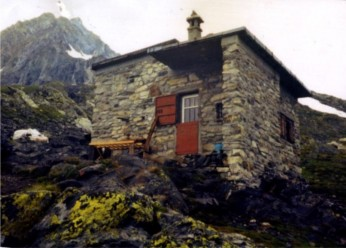

La Storia

Il rifugio fu costruito nel 1937 in ricordo di Mario Del Grande, perito sulla Punta Rasica nel 1936, e di Remo Camerini, precipitato nel 1926 dal Sigaro in Grigna Meridionale, da un gruppo di loro amici che ne fecero in seguito dono alla Sezione del CAI di Milano. Più volte ripristinato a seguito di atti di vandalismo e del naturale deterioramento della struttura, il bivacco, per le precarie condizioni in cui versava, non poteva essere considerato più che un punto d'appoggio in caso di maltempo.
Il giorno 12 novembre 2001, dando seguito al deliberato Assembleare, la sezione di Milano ha firmato l'atto di passaggio in proprietà alla Sezione di Sovico del Club Alpino Italiano del rifugio "Mario Del Grande - Remo Camerini", situato alla Bocchetta Piattè di Vazzeda (m 2600) nel Gruppo Masino-Bregaglia-Disgrazia. Si deve proprio all'intraprendenza ed alla passione dei Soci della piccola Sezione briantea di Sovico, la completa e funzionale ristrutturazione del rifugio.

Negli anni 2004-2005 il Consiglio della sezione decide di effettuare un piccolo ampliamento finalizzato alla messa a norma degli impianti, alla creazione di un bagno interno, di una cucina, di un locale gestori ed una piccola cantina. Il lavoro che è stato fatto al Rifugio è sicuramente in linea con le richieste che erano state espresse all'interno del consiglio e dell'assemblea dei soci, cioè quello di fare un intervento che non snaturasse le caratteristiche originali del rifugio, che non aumentasse in modo eccessivo il numero di posti, che lasciasse un po' di riservatezza ai gestori che si trovavano a convivere nello stesso spazio con i clienti ed ultimo, ma più importante, che ci fosse un occhio di riguardo al fattore igiene.

Di conseguenza il Rifugio, pur essendo notevolmente migliorato sotto ogni punto di vista, nonostante l'ampliamento, le riparazioni e le migliorie apportate, resta egualmente, il piccolo Rifugio, forse un po' spartano per chi non conosce la montagne, ma perfettamente integrato nel magnifico panorama delle montagne circostanti, del Disgrazia e del Vazzeda.